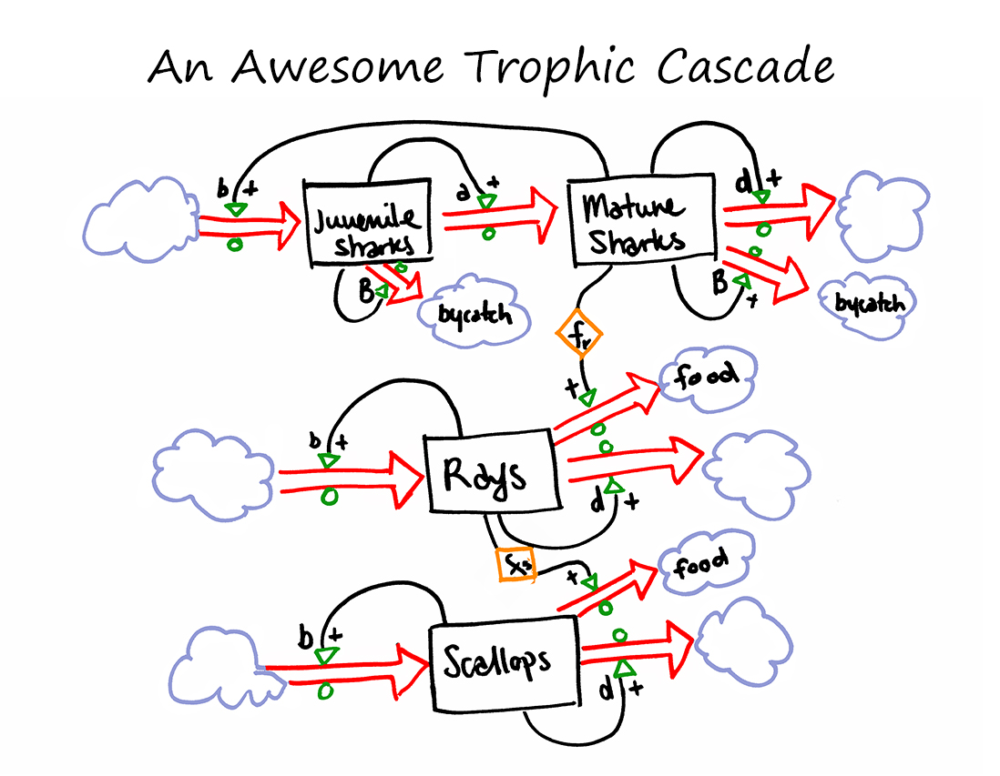
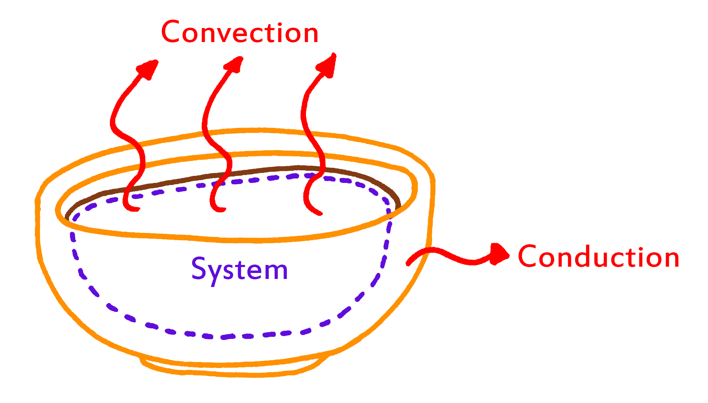

Modeling and Simulation
Modeling and Simulation of the Physical World, better known as ModSim, introduced us to model building (suprise!) and coding in MATLAB. In this class we had three different projects, a population model, a thermal system model, and a mechanical system model.Sharks, Rays, and Scallops
So apparently Sharks, Rays, and Scallops are tied together by the string of fate via the food chain. The whole premise of this project was that overfishing of sharks causes a sharp spike in Ray populations who then decimate surround scallop populations. In order to model this system we had to first understand stocks and flows, which is essentially a visual way to represent the various preditor/prey relationships between the three populations. I then took these relationships and translated it into code and outputed this:
=722.jpg)
What's the point of a model if you don't use it to answer questions? I wanted to know if there was a starting ray population that would kick the whole system into equilibrium. For the long answer, try to decipher my pdf (sorry).
tl;dr: No, there is isn't a starting ray population that can do this.
Is Blowing on Your Soup Doing any Good?
Our second projects had to be a thermal or a pharmaketic system. In an effort to pick a system that would be relavant to our everyday lives, my partner (James) and I chose to model a bowl of soup. I mean, we as humans have been blowing on soup for centuries, is it an act of naievitity? Find out, in our poster! Out of Control Hamster Balls: Hamster Survival Stories
Our final ModSim project had to be based on a mechanical system, Michael (my new partner) and I decided to model an out of control hamster ball. Normally a hamster is in full control of the motion of its hamster ball, an out of control hamster ball is a situation where the hamster ball is controlling the hamster. Our question was : How long can you safely keep a hamster on a ramp of a given slope?These posters were meant for poster presentations, so feel free to email me at jiaying.wei@students.olin.edu if you have any questions.